4-2-4 ルーフヘッドライニング
構成図
|
1 |
HEADLINING, ROOF (F3311-A1000) |
2 |
CLIP (Z6130-00001) |
|
3 |
CLIP (Z6130-00001) |
4 |
VISOR ASSY (G4310-A1000) |
|
5 |
GARNISH, CENTER PILLAR, RH (F2411-A1000) |
6 |
GARNISH, ROOF SIDE, INNER RH (F2551-A1000) |
|
7 |
CLIP (Z6130-00001) |
- |
- |
取り外し前作業
-
SEAT ASSY, FR取り外し4-2_1 シート
-
BELT ASSY, FR SEAT LAP OUTER, RH取り外し4-2ｰ2 シートアウタベルト
-
BOARD SUB-ASSY, SIDE TRIM, LWR RH取り外し4-2-3 インストルメントパネル
-
GARNISH SUB-ASSY, FR PILLAR, NO.2 RHおよびGARNISH SUB-ASSY, FR PILLAR, NO.2 LH取り外し4-2-3 インストルメントパネル
取り外し手順
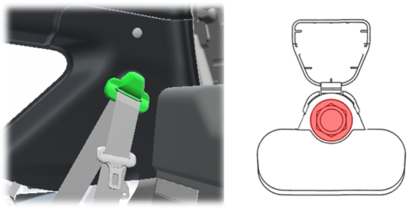
1.台湾仕向け: BELT ASSY, RR SEAT LAP OUTER, RH切り離し
-
BELT ASSY, RR SEAT LAP OUTER, RHのカバーを開ける。
-
ボルトを取り外し、BELT ASSY, RR SEAT LAP OUTER, RHを切り離す。
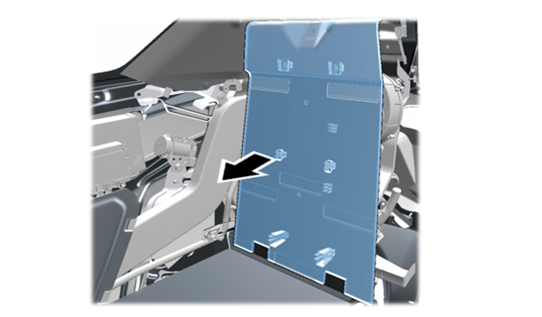
2.BASE SUB-ASSY, RR SEAT BACK取り外し
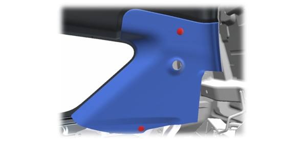
3.GARNISH, ROOF SIDE, INNER RH取り外し
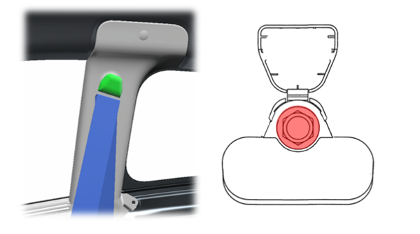
4.BELT ASSY, FR SEAT LAP OUTER, RH切り離し
-
BELT ASSY, FR SEAT LAP OUTER, RHのカバーを開ける。
-
ボルトを取り外し、BELT ASSY, FR SEAT LAP OUTER, RHを切り離す。
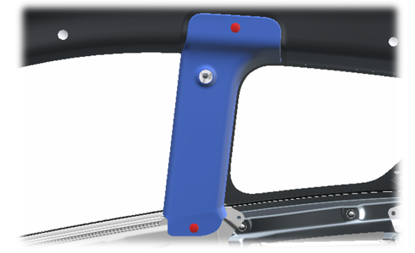
5.GARNISH, ROOF SIDE, INNER RH取り外し
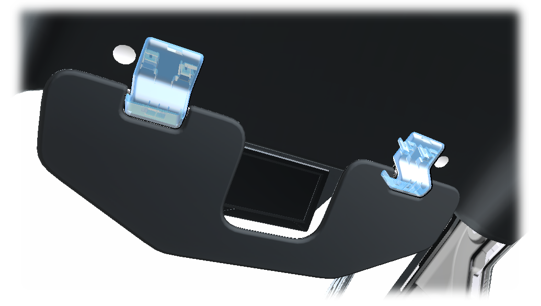
6.VISOR ASSY取り外し
-
ツメのかん合を外し、カバーを取り外す。
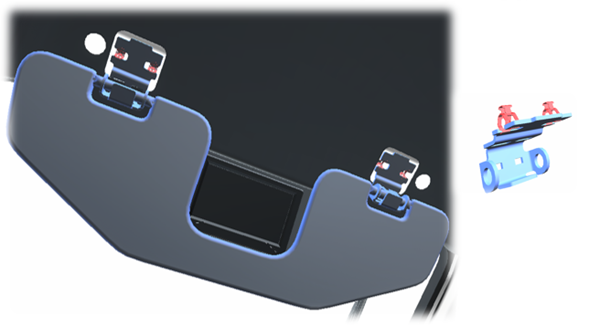
-
ツメのかん合を外し、VISOR ASSYを取り外す。
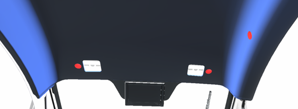
7.HEADLINING, ROOF取り外し
-
クリップを取り外す。
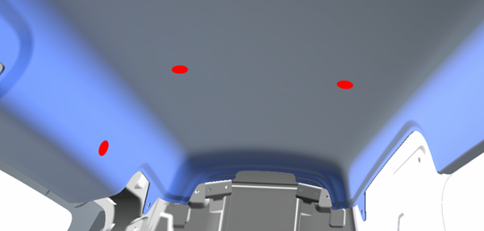
-
クリップを取り外す。
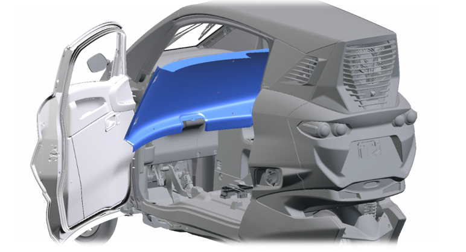
-
HEADLINING, ROOFをドア開口部から搬出する。
取り付け手順
取り外しと逆の手順で取りつける。
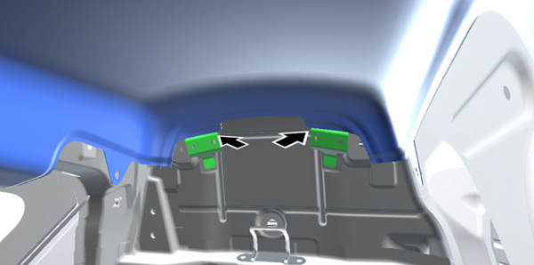
1.HEADLINING, ROOF取り付け
-
図のブラケットにHEADLINING, ROOFを乗せるようにして取り付ける。
2.VISOR ASSY取り付け
-
ツメをかん合させ、VISOR ASSYを取り付ける。
3.BELT ASSY, FR SEAT LAP OUTER, RH取り付け
-
ボルトでBELT ASSY, FR SEAT LAP OUTER, RHを取り付ける。
4.台湾仕向け: BELT ASSY, RR SEAT LAP OUTER, RH取り付け
-
ボルトでBELT ASSY, RR SEAT LAP OUTER, RHを取り付ける。